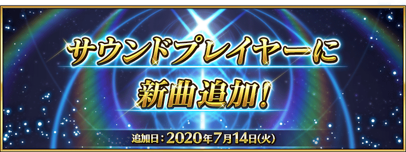
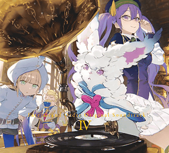

在遊戲內的個人空間(マイルーム)可選擇的「音樂鑑賞(サウンドプレイヤー)」追加新樂曲。
本次新追加的樂曲是從2019年配信的第2部 第4章「Lostbelt No.4 創世滅亡輪廻 由伽・剎多羅 黑色最終之神」到第2部 第5章「Lostbelt No.5 星間都市山脈 奧林帕斯 擊落神之日」為止的樂曲為首，於各種活動等發行的全60首。
◆追加時間◆
2020年7月14日(二) 17:00～
原聲帶第四彈 2020年7月15日(三)發售！

包含上述介紹在「音樂鑑賞」追加的60首，全3張組的原聲帶第四彈「Fate/Grand Order Original Soundtrack Ⅳ」在2020年7月15日(三)發售！
詳情請自下述URL確認。
https://www.fate-go.jp/music/ost4.html